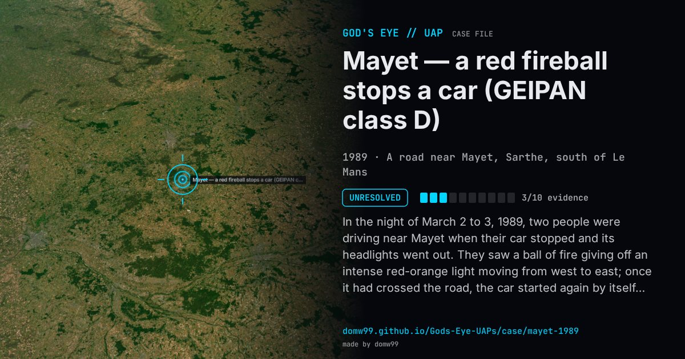

Mayet — a red fireball stops a car (GEIPAN class D)

In the night of March 2 to 3, 1989, two people were driving near Mayet when their car stopped and its headlights went out. They saw a ball of fire giving off an intense red-orange light moving from west to east; once it had crossed the road, the car started again by itself. They were badly shaken and wondered if they had dreamed it. After a local newspaper carried the story, a woman from Le Mans got in touch to say that she too had seen an orange fireball that night, at about 1:30, and that her dog had been terrified while it was in sight.
Explanation
GEIPAN classes it D, unexplained after investigation. A bright meteor would explain an orange fireball crossing west to east, but not a car that stopped and lost its headlights as it passed.
What was seen
Shape: A ball of fire with an intense red-orange light
Witnesses: Two people in a car; a woman in Le Mans who saw an orange fireball that night and whose dog panicked
Duration: Seconds to minutes
Sources
Browse
- France
- 1980s
- Unresolved
- Close encounters
- Official government documents
- Many independent witnesses
- Reported electromagnetic effects
- Lights and fireballs
- Spheres and orbs